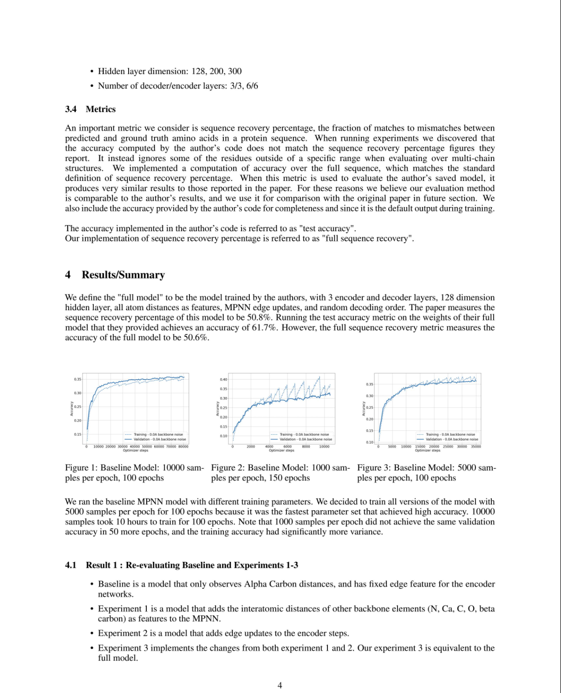

This is a screenshot from my final project for Advanced Machine Learning.
This class is where I got the first taste of advanced coursework, and the research process.
In a group of 4 students, we replicated some of the results of a paper about a deep learning model in computational biology called ProteinMPNN.
This class was both easier and harder than a standard class,
because some of the concepts were very complicated, but the
work I was expected to do took less time over the whole
quarter.
It was a large project, and the important skill I learned that I have taken to other classes has been on how to work with other people to accomplish something. The best thing we did was create a project outline very early on, so we all had an aligned vision for where we were going.